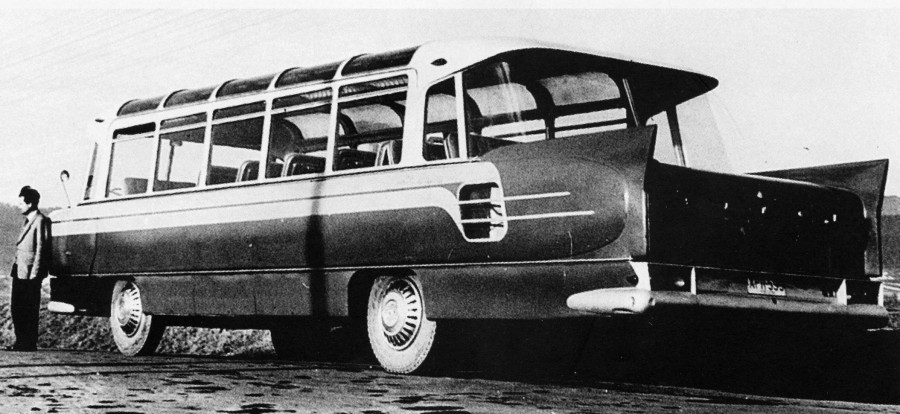

Strona główna
Nietypowe autobusy
W tej częci strony internetowej chciałbym głownie skupić się na projektach autobusów
Zdzisława Beksińskiego. Zdzisław Beksiński – polski inżynier, architekt, malarz, rzeźbiarz, fotograf, rysownik i artysta fantastyczny posługujący się też grafiką komputerową. Od 1959 r. Beksiński zatrudnił się jako plastyk w sanockiej Fabryce Autobusów „Autosan”, tworząc prototypy samochodów. Codziennie pracował po 6 godzin, a resztę czasu poświęcał na działalność twórczą. Należał do Związku Polskich Artystów Plastyków w Warszawie.
To właśnie niektóre z jego projektów
